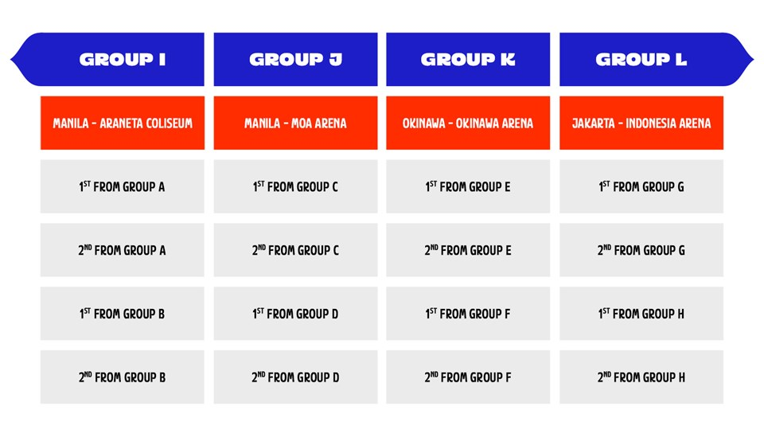
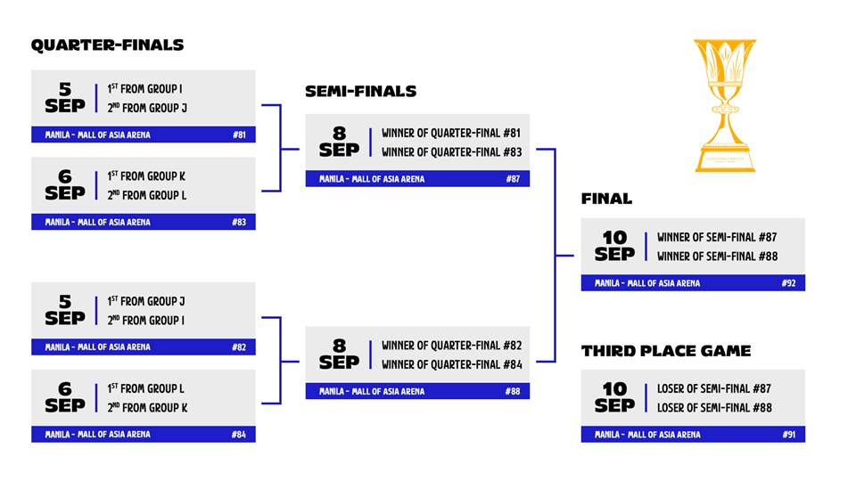
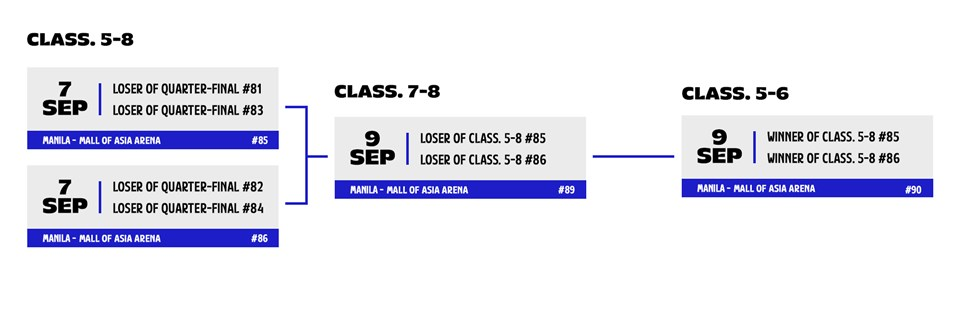

Système de compétition : Qualification
Phase de groupes - 1er tour
8 GROUPES DE 4 EQUIPES- Chaque équipe affronte les trois autres équipes de son groupe, soit un total de 48 matchs (3 par équipe, 6 par groupe).

- Les deux meilleures équipes de chaque groupe se qualifient pour le 2e Tour.
- Les deux moins bonnes équipes de chaque groupe disputent les matchs de classement pour les places 17 à 32.
Phase de groupes - 2e tour
Phase de groupes - 2e tour
4 GROUPES DE 4 EQUIPES- Les résultats des trois matchs du 1er Tour sont conservés pour ce 2e Tour.
- Chaque équipe affronte les deux équipes de son groupe contre lesquelles elle n'a pas encore joué durant le 1er Tour, pour un total de 16 matchs (2 par équipe, 4 par groupe). 
- Les deux meilleures équipes de chaque groupe se qualifient pour les Quarts de finale.
- Les deux moins bonnes équipes de chaque groupe sont éliminées et classées aux places 9 à 16, selon le Règlement officiel de basketball.
Phase finale 
Les équipes ayant perdu en quarts de finale disputent les matchs de classement pour les places 5 à 8.
Match de classement
POURQUOI DES MATCHS DE CLASSEMENT ?Les matchs de classement sont nécessaires pour établir le classement final de la Coupe du Monde FIBA 2023, qui permet de déterminer quelles équipes se qualifieront pour les JO de Paris 2024. Un total de 7 équipes -en plus de la France (sujet à une décision du Bureau Central de la FIBA), hôte de l'événement, se qualifieront directement pour le Tournoi Olympique.
Le classement final servira également à qualifier d'autres équipes pour les Tournois de Qualification Olympique FIBA.
PLACES 5-8  Aucun match
Toutes les équipes qui terminent aux 3e et 4e rangs des groupes du 2e Tour sont classées selon le Règlement officiel de basketball :
- 3e des groupes aux places 9-12
- 4e des groupes aux places 13-16
Tous les résultats de la Phase de groupes - 1er Tour sont conservés pour ce tour.
Chaque équipe affronte les deux autres équipes de son groupe contre lesquelles elle n'a pas joué durant la Phase de groupes -1er Tour, pour un total de 16 matchs (2 par équipe, 4 par groupe).
À l'issue de ces matchs, le classement des places 17 à 32 est établi conformément au Règlement officiel de basketball :
- 1ers des groupes aux places 17 - 20
- 2emes des groupes aux places 21 - 24
- 3emes des groupes aux places 25 - 28
- 4emes des groupes aux places 29 - 32